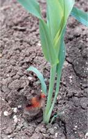
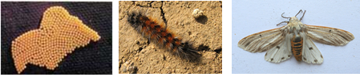

| Home |
| SORGHUM |
| 1. Sorghum Shootfly |
| 2. stem borer |
| 3. pink stem borer |
| 4. shoot bug |
| 5. earhead bug |
| 6. sorghum midge |
| 7. plant lice (Aphids) |
| 8. earhead web worm |
| 9. gram caterpiller |
| 10. plant bug |
| 11. stink bug |
| 12. mirid bug |
| 13. slug caterpiller |
| 14. Leaf roller |
| 15. flea beetle |
| 16. red hairy caterpiller |
| 17. semilooper |
| 18. weevils |
| 19. wingless grasshopper |
| Integrated Pest Management |
| Questions |
| Download Notes |
PESTS OF SORGHUM :: Minor Pests :: Red Hairy Caterpiller
16. Red hairy caterpillar: Amsacta albistriga, A. moorei (Arctiidae: Lepidoptera)
Distribution and status: Oriental in distribution including India. It is a serious pest on pulses in Rajasthan and groundnut in southern part of India. Amsacata albistriga is predominant in South India while A. moorie dominates northern parts of the country.
Host range: Maize, sorghum, green gram, sesame, pearl millet, finger millet, groundnut, sunhemp, castor, cotton. Damage symptoms: The larvae feed on the leaves gregariously by scrapping the under surface of tender leaflets leaving the upper epidermal layer intact in early stages. Later, they feed voraciously on the leaves and main stem of plants. They march from field to field gregariously. Severely affected field looks as if grazed by cattle. |
 |
Bionomics: Adults are medium sized moths. In A. albistriga, forewings are white with brownish streaks all over and yellowish streaks along the anterior margin and hindwings are white with black markings. A yellow spot is found on the head. In A. moorei, all markings are red in white wings. On receipt of heavy rains, in kharif season, moths emerge out from soil in the evening hours. It lays eggs on the under surface of the leaves. The eggs are cream coloured or bright yellow and laid in groups. A female moth may lay about 600-700 eggs. Egg period is 2-3 days. Tiny greenish caterpillar feeds on the leaves gregariously. A full-grown larva measures about 5 cm in length with reddish brown hairs all over the body arising on warts. The larval period is 40-50 days.The grown up larva pupate in earthern cells at a depth of 10-20 cm. They pupate mostly along the field bunds and in moist shady areas under the trees in the field and undergo pupal diapause till the next year. |
 |
ETL: 8 egg masses / 100 meter
Management
- Use light trap
- Dig trenches around the infested field and dust any of the insecticide viz.,endosulfan 6% D or methyl parathion 2% D
or fenvalarate 2% D. - pray endosulfan 35 EC 750 ml/ha quinalphos 25 EC 750 ml/ha (or) dichlorvas 76 WSC 625 ml/ha (or)
chlorpyriphos 20 EC 1250 ml/ha in 375 litres of water.